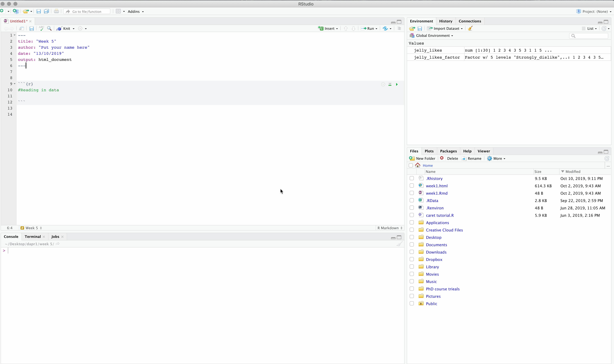
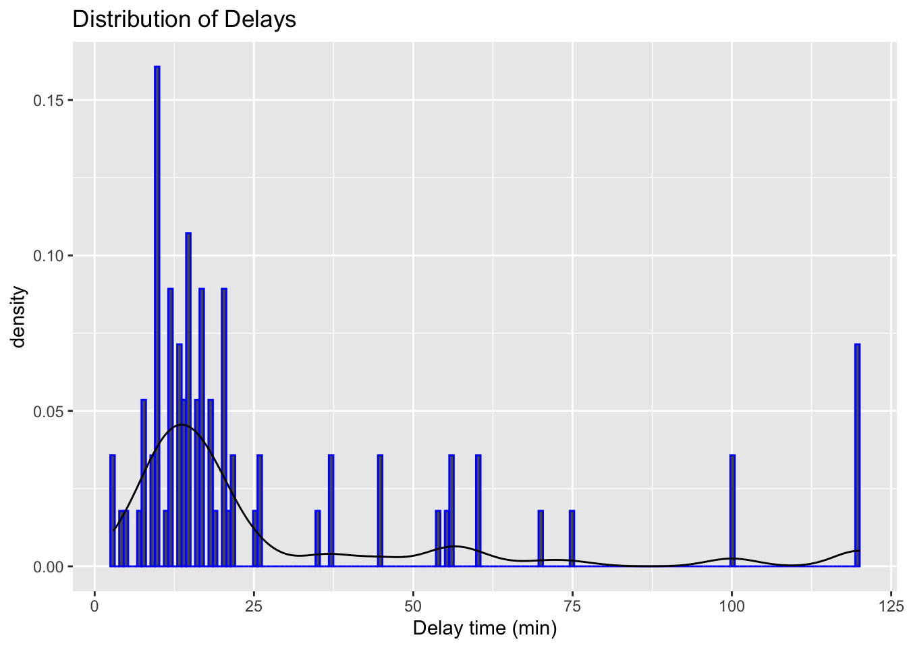
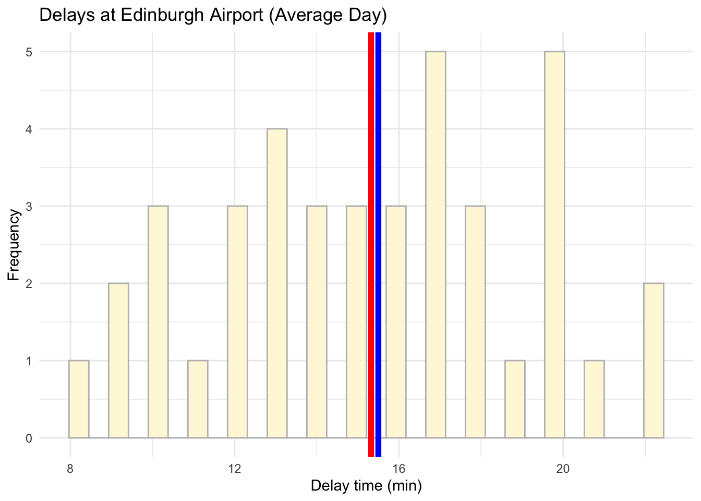
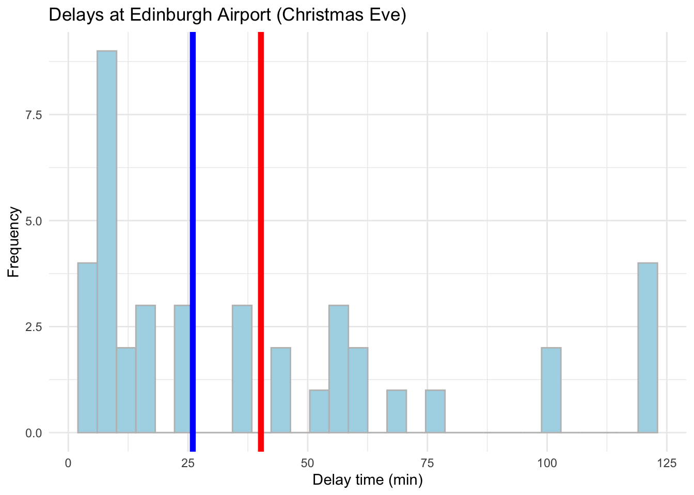
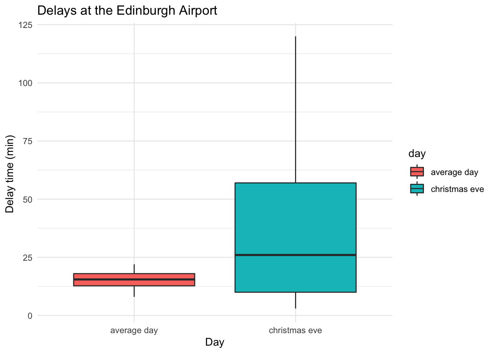
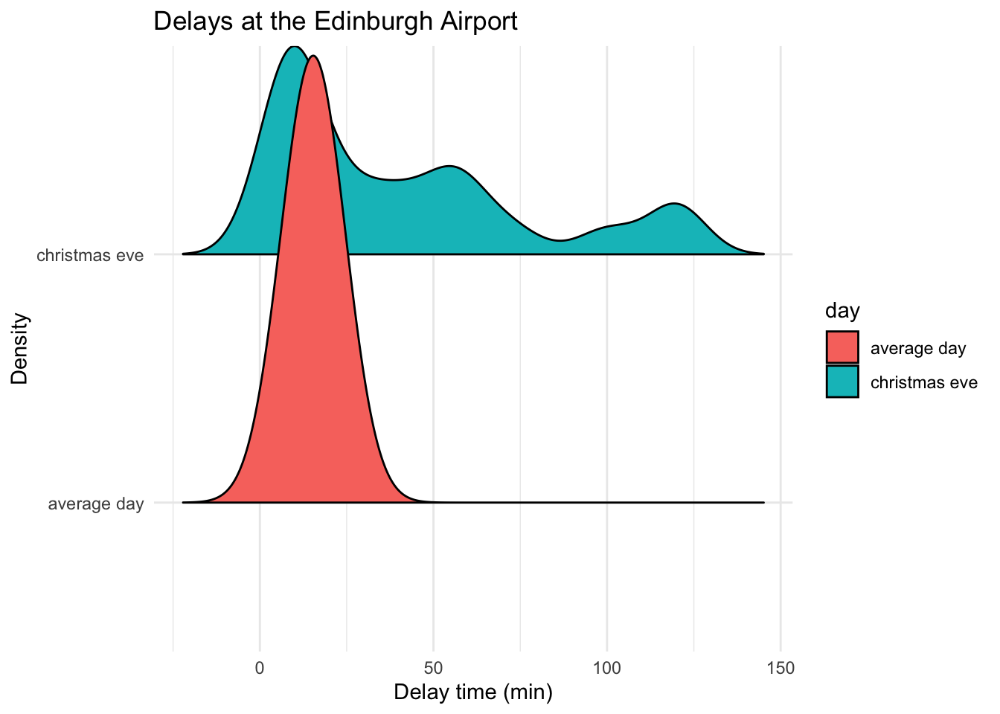
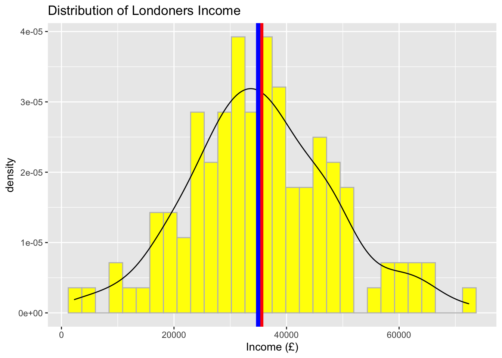
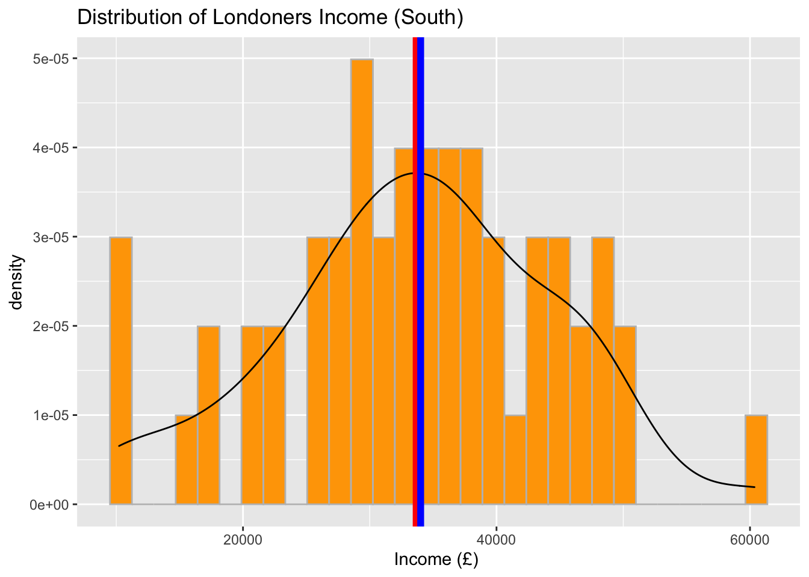
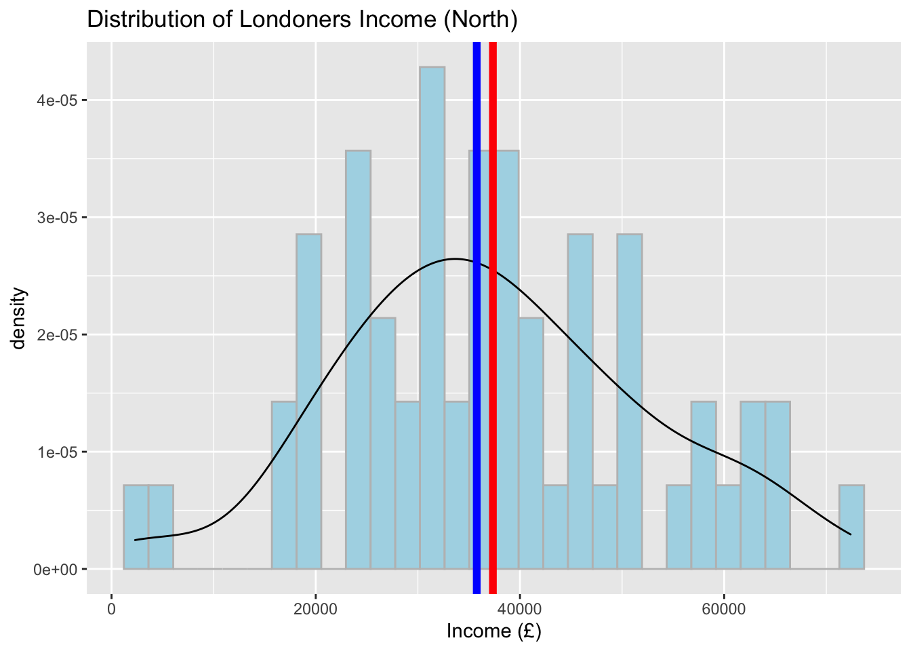
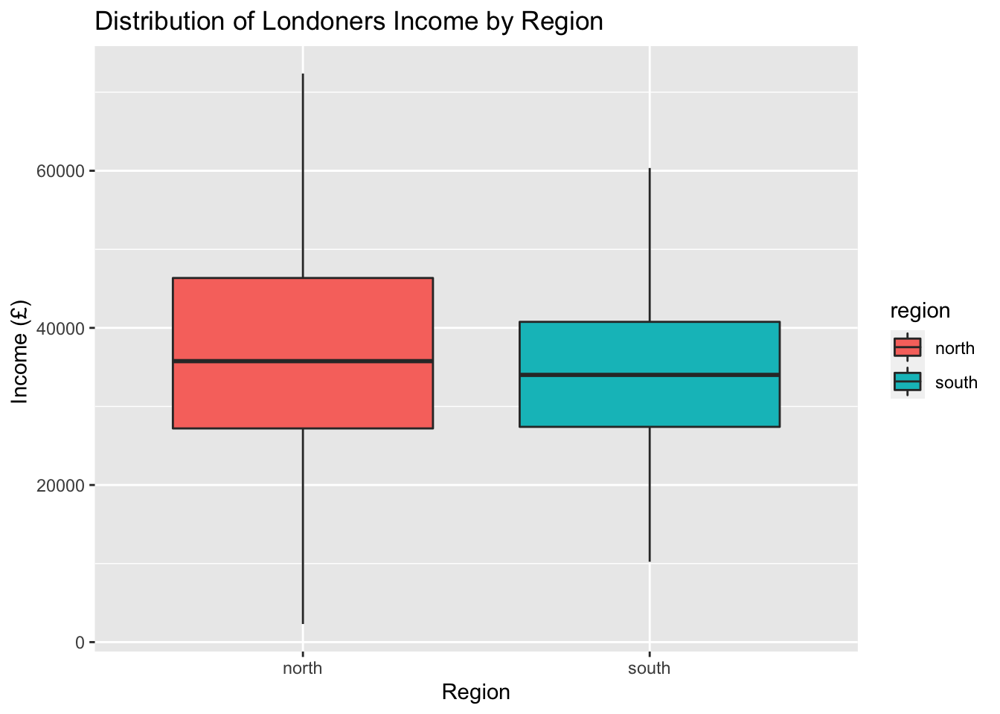

Chapter 5 Week 5
5.1 Central Tendency and Variability
The recommended additional reading can be found in Chapter 5 of Navarro Textbook.
We have largely summarised the key information from the reading and the lecture notes in this week’s materials so that you can get a grasp of how to quickly produce descriptions of your data in R. By the end of this week, hopefully you will get some intuition about reading data in R and providing visualisations to accompany your descriptive data analysis.
5.2 Load all the necessary packages
5.3 Descriptive Statistics
When statisticians are asked to describe what their data looks like, they will often start with descriptive statistics as a quick way to inform people about their data or variable distributions. It may sound weird now but as you move through the years of doing statistics you will find that just reporting the mean, median and standard deviation can easily allow you to visualise the data in your mind without the need for any graphics.
Descriptive statistics are an essential component of any research paper or report and you will often find them in those of your readings that use empirical evidence.
Interestingly, when it comes to news articles, often only the mean or median are reported (e.g. “Median wage in the UK is £29,588”). Without additional information on sample size or other measures of central tendency, these statistics can be quite meaningless and can trick the reader. We will show you why in the practice exercises below.
5.4 Central tendency & variability
To illustrate measures of central tendency we will be using quite a common but easy to understand example of flight delays. Knowing the average flight delay is handy when you are making plans for travelling, but without knowing the actual distribution of the delays for a given dataset, we cannot really know exactly what to expect.
Here is some data I found online about average flight delays across some of the UK’s biggest airports. 2

5.5 Mean and median
We will work with flight delays in Edinburgh, since we are based here! You will know from experience that you rarely have a delay of exactly 15.8 minutes and in reality, delays could easily range from a minute to a few hours. This may depend on the day of the year, the airline, the time of day and many other factors. Consequently, taking the mean at face value is not always the best strategy!
I have collected the data for the delay times of flights on Christmas Eve and a randomly selected midweek day during autumn. Let’s see what we have. The data comes in minutes. Read the data in using the command below. We will then explore the data using some descriptive measures. We will try to see if we can tell anything about the distribution of the data from the central tendency measures - we will then visualise it to check how good our intuition was.
5.5.1 Reading data in
We will need to read in the data after saving it in our folder. We will do the steps together but if you forgotten here is the quick guide:

For RCloud it is the same process really, just make sure you have uploaded your file, then select working directory and read in the file.

There is another way to set your working directory. Go to Session -> Set Working Directory ->Choose Directory ->Locate your folder . Then run the following:
Note that data now appears in your Environment.
## delay_time day
## 1 10 christmas eve
## 2 26 christmas eve
## 3 35 christmas eve
## 4 12 christmas eve
## 5 120 christmas eve
## 6 100 christmas eve5.6 Using piping operator for descriptive statistics
5.6.1 Mean
The mean is also known as the average across your observations and is achieved by summing all of the observations together and then dividing by the total number of obervations (N).
The equation for the mean is:
\[\frac{\sum\limits_{i = 1}^{N}x_i}{N}\] Get the means:
## mean
## 1 27.775## # A tibble: 2 x 2
## day Mean
## <fct> <dbl>
## 1 average day 15.3
## 2 christmas eve 40.2It seems like the mean delay time on an ‘average day’ is much closer to what the article reported compared to the mean Christmas Eve delay time which is more than double. Let’s explore it a bit more.
5.6.2 Median
The median suggests where the centre of the distribution is. If the data is skewed (e.g. remember our diamond prices from last week?), the median is certainly a better measure of central tendency than the mean.
## # A tibble: 2 x 2
## day Median
## <fct> <dbl>
## 1 average day 15.5
## 2 christmas eve 26Note the median for Christmas Eve.
Or all in one go:
edinburgh_delays %>%
group_by(day) %>%
summarise(
median = median(delay_time),
mean = mean(delay_time)
)## # A tibble: 2 x 3
## day median mean
## <fct> <dbl> <dbl>
## 1 average day 15.5 15.3
## 2 christmas eve 26 40.25.7 Standard deviation
We can also calculate standard deviation to get an idea of the variability around our means. Note the formula for the overall variance around the mean first:
\[{\sigma}^2=\frac{1}{N-1}\sum_{i=1}^{N} (X_{i} -\bar{X})^2 \]
The standard deviation is by derivation:
\[{\sigma}=\sqrt{\frac{1}{N-1}\sum_{i=1}^{N} (X_{i} -\bar{X})^2} \] Let’s see what it looks like numerically:
# Describe the flight delays (mean, median, variance, sd)
edinburgh_delays %>%
group_by(day) %>%
summarise(
mean = mean(delay_time),
median = median(delay_time),
variance = var(delay_time),
sd = sd(delay_time)
)## # A tibble: 2 x 5
## day mean median variance sd
## <fct> <dbl> <dbl> <dbl> <dbl>
## 1 average day 15.3 15.5 14.8 3.85
## 2 christmas eve 40.2 26 1400. 37.4We can make some preliminary conclusions about the data. Note the standard deviation for Christmas Eve. We already know there is a large difference between the two means, but standard deviation can tell us about the spread of our data around the mean. There is less variation on an average day than on Christmas Eve.
Before we make some plots, note that you can save your summary statistics as an object.
# Save descriptives as an object
descriptives <- edinburgh_delays %>%
group_by(day) %>%
summarise(
median = median(delay_time),
mean = mean(delay_time),
variance = var(delay_time),
sd = sd(delay_time)
)## # A tibble: 2 x 5
## day median mean variance sd
## <fct> <dbl> <dbl> <dbl> <dbl>
## 1 average day 15.5 15.3 14.8 3.85
## 2 christmas eve 26 40.2 1400. 37.45.8 Visualise your data
Now we have gathered all the numerical descriptions, let’s see how good our intuition was about what the data looks like.
Let’s try visualising the delays regardless of the day:
# Visualise the data using histogram
ggplot(data = edinburgh_delays, aes(x = delay_time)) +
geom_histogram(aes(y = ..density..), binwidth = 0.7, color = "blue") +
geom_density() +
xlab("Delay time (min)") +
ggtitle("Distribution of Delays")
We have quite a variation. We also know that there were differences in the means and the standard deviations when we checked the variable by day. Let’s now visulise each day separately.
We can do these with a mini %in% in ggplot(). Pretty cool, right?
# Visualise the data using a histogram by day (average day)
ggplot(data = subset(edinburgh_delays, day %in% c("average day")), aes(x = delay_time)) +
geom_histogram() +
geom_vline(aes(xintercept = mean(delay_time)), color = 'red', size = 2) +
geom_vline(aes(xintercept = median(delay_time)), color = 'blue', size = 2) +
labs(x = 'Delay time (min)', y = 'Frequency', title = 'Delays at Edinburgh Airport (Average Day)')## `stat_bin()` using `bins = 30`. Pick better value with `binwidth`.
# Visualise the data using a histogram by day (average day)
ggplot(data = subset(edinburgh_delays, day %in% c("average day")), aes(x = delay_time)) +
geom_histogram(color ='grey', fill ='cornsilk') +
geom_vline(aes(xintercept = mean(delay_time)), color = 'red', size = 2) +
geom_vline(aes(xintercept = median(delay_time)), color = 'blue', size = 2) +
labs(x = 'Delay time (min)', y = 'Frequency', title = 'Delays at Edinburgh Airport (Average Day)') +
theme_minimal()## `stat_bin()` using `bins = 30`. Pick better value with `binwidth`.
# Visualise the data using a histogram by day (Christmas Eve)
ggplot(data = subset(edinburgh_delays, day %in% c("christmas eve")), aes(x = delay_time)) +
geom_histogram(color = 'grey', fill = 'lightblue') +
geom_vline(aes(xintercept = mean(delay_time)), color ='red', size = 2) +
geom_vline(aes(xintercept = median(delay_time)), color ='blue', size = 2) +
labs(x = 'Delay time (min)', y = 'Frequency', title = 'Delays at Edinburgh Airport (Christmas Eve)') +
theme_minimal()## `stat_bin()` using `bins = 30`. Pick better value with `binwidth`.
Conclusions?
Of course, when describing the average delay for the news article it is best to focus on an average day rather than Christmas Eve. From the example above, if we take an average autumn weekday our data matches what the article suggests pretty well. Nevertheless, it tell us little about what to expect during the weekend or a busy public holiday. To gauge the range of delays and the variation around the mean value, we would need statistics for the mean, median and standard deviation to get a better picture about the situation. Graphics will help us even more!
As a final one, let’s also add a box plot or ggridges():
# Boxplot to visualise a comparison
ggplot(data = edinburgh_delays, aes(y = delay_time, x = day, fill = day)) +
geom_boxplot() +
labs(x = 'Day', y = "Delay time (min) ", title = "Delays at the Edinburgh Airport ") +
theme_minimal()
# ggridges
library(ggridges)
ggplot(data = edinburgh_delays, aes(y = day, x = delay_time, fill = day)) +
geom_density_ridges2() +
labs(x = 'Delay time (min)', y = "Density", title = "Delays at the Edinburgh Airport") +
theme_minimal()## Picking joint bandwidth of 8.38
Note: before jumping to any conclusions, remember that we only have records for 40 flights for each of the days. Edinburgh Airport can see as many as 313 flights a day. Since we picked our data at random we can consider our samples representative (note: a rule of thumb is > 25 but this can vary depending on the phenomena you are trying to describe).
Let’s try to explore something else now. Load your practice file for today and work with the income data in a similar fashion to what we just did.
5.9 Practice.Rmd Solutions
Make sure to load the packages first:
5.9.1 Income Distribution Example
Let’s look at some data on income collected for the UK in 2017 by ONS. Note the mean and median values and the skew. What can you say about the income distribution in the UK? How representative is the data of the true population? You can read more about income calculations in the ONS report, if curious of course.

I decided to collect my own sample of individuals so I collected the data for 115 residents aged 18+ in London. I further grouped them into North or South London. Use the data to study the variation in income.
Open your Rmd template (from here or from Learn) and the data (from here or Learn) for this week and attempt the following steps.
- Work with the data on income to provide information about the income distribution for Londoners.
- Save an RMarkdown file for this lab, make notes where necessary and replicate the steps you have seen in the worked example.
- Make sure to visualise the data, describe it and write a few notes with conclusions about what you found.
- Are there differences based on geography (i.e. North versus South)?
- Pay attention to the sample size and how representative it is of the true population (i.e. can we use the London mean to represent the UK?)
- Compile your file in the end to produce the final report. Polish off some chunks to make it all look nicer!
- Congratulate yourself on the amazing work you have done over past five weeks!
## income region
## 1 64352 north
## 2 49667 north
## 3 57265 north
## 4 20106 north
## 5 54457 north
## 6 72379 north## mean
## 1 35504.47## # A tibble: 2 x 2
## region mean
## <fct> <dbl>
## 1 north 37348.
## 2 south 33661.## # A tibble: 2 x 2
## region median
## <fct> <dbl>
## 1 north 35766
## 2 south 34016.# Means, medians and SDs by region
descriptives <- income_london %>%
group_by(region) %>%
summarise(
mean = mean(income),
median = median(income),
sd = sd(income)
)
descriptives## # A tibble: 2 x 4
## region mean median sd
## <fct> <dbl> <dbl> <dbl>
## 1 north 37348. 35766 14937.
## 2 south 33661. 34016. 10719.5.9.2 Visualisations
5.9.2.1 Visualise the distribution of income
# Visualise the data using a histogram and/or a density plot
ggplot(data = income_london, aes(x = income)) +
geom_histogram(aes(y = ..density..), color = 'grey', fill = 'yellow') +
geom_density() +
geom_vline(aes(xintercept = mean(income)), color = 'red', size = 2) +
geom_vline(aes(xintercept = median(income)), color = 'blue', size = 2) +
labs(x = "Income (£)", title = "Distribution of Londoners Income") ## `stat_bin()` using `bins = 30`. Pick better value with `binwidth`.
5.9.2.2 Visualise the distribution of income by region
Now, focus on regions and provide a separate plot for ‘South’ and ‘North’. Feel free to add mean and median lines too. You will note that the central tendency measures may have changed a little but the shape of the data remains almost the same (i.e. approximately normal).
# Visualise the data using a histogram by region (South)
ggplot(data = subset(income_london, region %in% c("south")), aes(x = income)) +
geom_histogram(aes(y = ..density..), color = 'grey', fill = 'orange') +
geom_density() +
geom_vline(aes(xintercept = mean(income)), color = 'red', size = 2) +
geom_vline(aes(xintercept = median(income)), color = 'blue', size = 2) +
labs(x = "Income (£) ", title = "Distribution of Londoners Income (South)") ## `stat_bin()` using `bins = 30`. Pick better value with `binwidth`.
# Visualise the data using a histogram by region (North)
ggplot(data = subset(income_london, region %in% c("north")), aes(x = income)) +
geom_histogram(aes(y = ..density..), color = 'grey', fill = 'lightblue') +
geom_density() +
geom_vline(aes(xintercept = mean(income)), color = 'red', size = 2) +
geom_vline(aes(xintercept = median(income)), color = 'blue', size = 2) +
labs(x = "Income (£)", title = "Distribution of Londoners Income (North)") ## `stat_bin()` using `bins = 30`. Pick better value with `binwidth`.
# Boxplot to visualise a comparison
ggplot(data = income_london, aes(y = income, x = region, fill = region)) +
geom_boxplot() +
labs(x = 'Region', y = "Income (£) ", title = "Distribution of Londoners Income by Region") 
What can you conclude about regional differences from studying your data? We observed that there are slight differences in the central tendency measures between North and South London, however we cannot say anything more at this point. Next semester, we will show you an appropriate statistical test that you can use to provide a confident answer to such questions.
Compare the results you have observed to the graphic we have from ONS. Are there any differences? Can we use the London data to describe the whole population?
Finally, praise yourself for all the work so far :)
## [1] "You are wonderful!"Original Article ‘The average flight delay at each of the UK’s 25 busiest airports’↩